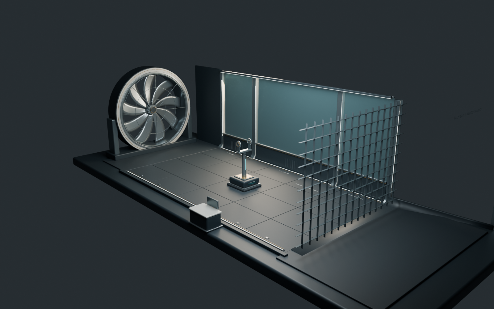

11 October 2026 · Local engineering tool · Branch codex/private-wind-tunnel
Private aerodynamic wind tunnel
The lab supports Finch U–2, Peregrine HX–27, Aurelia S32 and Stormbird HX–40. Each uses its actual runtime scale and a distinct main-wing analysis surface. The aircraft selector changes both the displayed model and numerical geometry. The modeled chamber is editable in Blender.
4 aircraftIndependent measured geometry
107 tests passedFull repository suite
23 browser checksDesktop, mobile, exports and invalid inputs
Open and use
Open the private lab. The development server is running on loopback. To restart it from the project root:
bun run lab:dev
Choose an aircraft, set airspeed and angle of attack, and inspect lift, induced drag and span loading. Use Flow close-up to inspect nose-to-tail motion, body deflection and the wing wake. Enable the lattice to see the actual analysis surface. Hide the chamber for unobstructed plan views. Run a sweep or refinement check, then export CSV or JSON. JSON includes the complete wing input, geometry revision, assumptions, conditions, span loading and numerical diagnostics.

Saved desktop browser evidence. Additional aircraft and mobile screenshots are in output/.
What the model calculates
Steady, incompressible, inviscid main-wing lift and induced drag. A horseshoe vortex lattice uses quarter-chord bound vortices, three-quarter-chord collocation, one chordwise row, cosine spacing and a fixed downstream wake. A pivoted dense matrix solve enforces the surface boundary condition; a Trefftz-plane wake calculation estimates induced drag. The airflow display integrates a regularized wing field and a circulation-based approximate rolled-up wake. A conservative envelope rasterized from every aircraft mesh routes paths around the fuselage, canopy, wings, tail and gear; continuous segment clearance checks reject penetrating traces. Full-aircraft body routing is illustrative and does not contribute to the force measurements.
Lift is resolved in the wind axes using circulation. Dynamic pressure is ½ρV²; reference coefficients use the measured gross wing area. Nominal authoring camber provides a thin-airfoil zero-lift estimate where documented. This intercept can be overridden and the override is recorded in the geometry revision.
Current accuracy boundary: this is a main-wing comparison tool. It excludes fuselage/tail/engine forces, parasite and viscous drag, stall, compressibility, validated wake roll-up, moments, control deflections, support interference and enclosure wall corrections. The modeled fan is decorative. Section polars are unvalidated; Aurelia uses an explicitly unverified symmetric-section assumption. Numerical convergence does not validate omitted physics. Swept, low-aspect-ratio wings especially need richer analysis before performance claims.
Supported conditions: 5–80 m/s, density 0.5–1.4 kg/m³, angle −8° to +8°. The UI allows angles outside the solver range to demonstrate rejection; it withholds results and disables exports there.
Fleet geometry and reference results
30 m/s, density 1.225 kg/m³, angle +4°, 96 panels, each aircraft’s default section assumption. CL and CDi compare wing behavior; lift differences also reflect area and camber. These are model outputs, not flight-test measurements.
Finch uses the extended existing measurement workflow. Peregrine excludes separate leading-edge extensions. Aurelia winglets are not separate lifting surfaces. Stormbird reconstructs its fuselage-covered root using design-sheet stations checked against outer exported sections, excluding separate inlet/root fairings. Each source asset has a SHA-256 revision; the audit fails if a source changes without refreshing measurements.
Modeled chamber and saved source
The test section measures 16 × 12 × 28 m, with observation glazing, ribs, floor panels, contraction inlet, straightener grid, downstream fan, pitch rig and instrument console. Conservative rotated aircraft bounds clear the section at −8°, 0° and +8° for all four aircraft. The editable source was generated in a separate factory-startup Blender process.
Editable tunnel.blend · Rebuild source · Runtime chamber GLB · Dimension manifest

Aircraft finish and handling
The tester, hangar and main game share the same finish refinement: coated paint retains its authored color and texture, polished hardware retains its metal response, rubber and textile stay matte, and tinted glazing exposes the modeled cockpit. Tunnel lighting now preserves more contrast instead of bleaching the aircraft.
Engine output follows an exponential spool response. Control rates build and decay smoothly with distinct pitch, roll and rudder response rates. Finch is gentle, Peregrine is responsive, Aurelia is deliberately slower, and Stormbird has the strongest roll authority. Beginner assist remains the default; it coordinates turns and recovers a released bank. Manual mode retains bank without that assistance.
These response settings are game control tuning, not measured angular inertia or a component-moment solver. Finch uses the documented physical force model and concept mass. The three jets still use acceleration-based lift, drag and propulsion tuning; they are not validated full-aircraft flight-dynamics models.
Performance optimization
Static mesh batching, on-demand shadows/rendering, cached linear solves and worker-based airflow tracing reduce steady draw calls and remove speed-change stalls. Measured comparison and verification.
Verification and practical limits
Real keyboard flight checks passed for all four aircraft: start Free flight, add throttle, bank past 0.25 radians, release the controls, and recover below 0.08 radians with 100 health and no ground contact. These short checks validate the control flow and assist recovery; takeoff and landing coverage is numerical, not a complete browser sortie.
- Full suite:
bun test --timeout 30000 — 107 tests, 0 failures, 7,907 assertions; 5.95 seconds in the final run. - Main application build and private lab build both pass. The lab outputs to
output/wind-tunnel-build; it has its own entry and Vite configuration. It is absent from game navigation and the main build entry list. - Elliptical AR≈8 analytic benchmark: lift-slope error 4.56%; induced-drag relation error 1.19%. Both below the declared 8% benchmark tolerance.
- All four reference conditions change less than 0.3% in CL and CDi between 96 and 144 panels. Residuals are below 1e−10.
- Revised Finch airflow close-up: 60.08 frames/s, 17.6 ms p95 frame time over 3.51 seconds at 1440×1000, DPR 1, cached headless Chromium with Metal. This short settled sample does not measure geometry rebuilds or other hardware.
- 23 browser acceptance checks pass with no exceptions/error console messages. The in-app browser additionally verified Stormbird selection and the four-aircraft comparison table.
- Code-review graph refreshed. Its index excludes these new untracked lab files; their dependencies and isolation were checked directly against imports, configuration and output.
Browser acceptance details
- Finch U–2 loads and computes lift
- Peregrine HX–27 loads and computes lift
- Aurelia S32 loads and computes lift
- Stormbird HX–40 loads and computes lift
- 17-case angle sweep completes
- Four refinement levels converge below 1% at reference condition
- Matched-condition comparison covers all four aircraft
- JSON export includes 17 cases, complete geometry and matching revision
- CSV export identifies aircraft, conditions and coefficients
- Unsupported angle withholds results and disables export
- Negative angle produces downward lift
- Browser airspeed changes scale lift by V squared and preserve CL
- Browser density changes scale forces linearly
- Analysis lattice and wing isolation controls update scene state
- Pause control freezes flow animation state
- Section override changes geometry input and export revision
- Mobile layout has no horizontal overflow
- Mobile aircraft selector switches geometry and model
- No browser exceptions or error console messages during acceptance run
Numerical and clearance evidence · Browser evidence · Performance sample · Keyboard handling evidence · Airflow recording · Full test log
Repeatable workflow
bun run lab:geometry # Refresh fleet geometry from runtime assets
bun run lab:test # Analytic, force scaling, field and fleet checks
bun run lab:audit # Verify hashes, convergence, chamber clearance; save evidence
bun run lab:model # Rebuild editable Blender source, GLB and preview
bun run lab:build # Build the independent local tool
bun run lab:browser # Run desktop/mobile acceptance against the running lab
When adding an aircraft, add its asset/transform/section assumption to lab/aircraft.ts, implement its wing selection in the measurement workflow, refresh geometry and rerun the audit. The catalogue is checked against the game’s aircraft IDs so an unhandled new aircraft becomes a TypeScript error.
Engineering references
The implementation follows the handbook’s emphasis on measured geometry, documented assumptions, numerical tests and a clear simulation boundary. Project aircraft-design handbook · MIT AVL method reference · NASA VSPAERO · NASA lift equation · NASA induced drag.
Source and model assets are saved in the working tree for review. The lab has not been deployed. The existing Finch engineering/flight changes remain separate in src/ and are covered by the final suite.